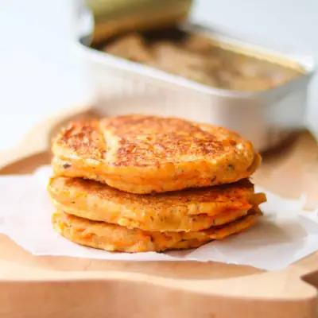

Sardine Pancakes

Ingredients
- 2 sardine fillets
- 1 egg
- 2 tablespoons mashed sweet potato
- 1 tablespoon flour (any kind)
- 1 teaspoon ground flaxseeds
Steps
- Add the sardines to a bowl and mash thoroughly with a fork until mostly smooth. Add the egg, mashed sweet potato, flour, and ground flaxseed and stir until everything is well combined.
- Heat a lightly oiled skillet over medium heat. Scoop the batter into the pan to form 3–4 small pancakes, gently flattening them as needed.
- Cook for about 2–3 minutes per side, or until the pancakes are lightly golden and the egg is cooked through. Transfer to a plate and allow the pancakes to cool before serving to your baby or toddler.
Recipe by Min Kwon · Kidfriendly Meals, from MJ and Hungryman. Saved here for personal use; the original has the full notes, tips and photos. Open original